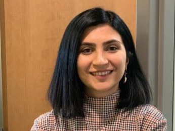

I am a formal semanticist working on tense, mood and modality, and on negation-related phenomena at the syntax–semantics interface. My research combines formal analysis with cross-linguistic evidence, in particular from Farsi, and, more recently, with experimental work.
I am a postdoctoral researcher at Georg-August-Universität Göttingen, in the DFG-funded Collaborative Research Center SFB 1629 “Negation in Language and Beyond”, a position held jointly with Goethe University Frankfurt. In Project A04, “Resolving the Neg-Raising Paradox”, I investigate neg-raising and the semantics of attitude predicates such as hope and want. Earlier work addresses fake tense and counterfactuality in conditionals, and the interpretation of indefinites in intensional contexts.
From 2022 to 2024 I was the Elahé Omidyar Mir-Djalali Postdoctoral Fellow in Iranian Linguistics and a lecturer at UCLA. I received my PhD in linguistics from UMass Amherst in 2022, with the dissertation Tense in Conditionals: Ins and Outs. Before that, I studied at the University of Tehran (BA in English Language and Literature, MA in Linguistics).

Email: zmirrazi@g.ucla.edu
ORCID: 0000-0002-8426-5983